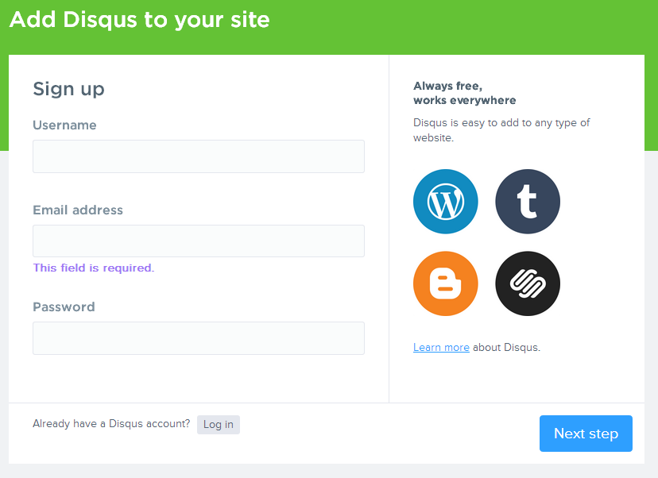
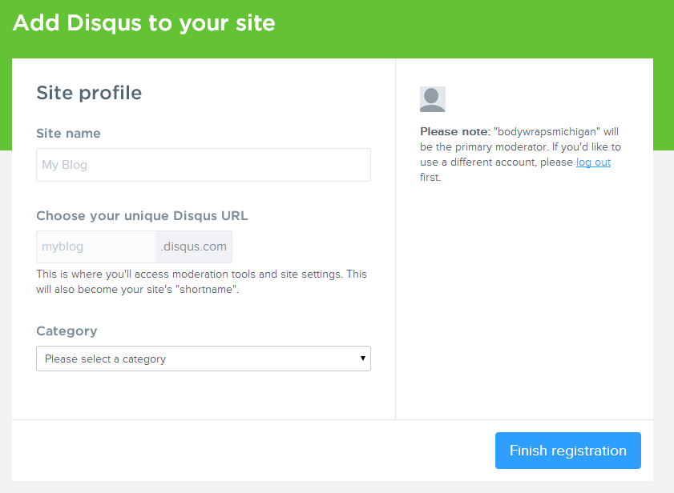

User guide
created: January 2015
updated: September 2015
by: Stefan Djokic
email: djokics@elfak.rs
version: 1.1.1
ghost: 0.5.x +
Thank you for purchasing Oak theme.
This easy and short documentation will help you install and set Oak theme properly. If you have any questions that are beyond the scope of this help file, please feel free to send me a letter anytime. Thank you!
Installation
Ghost
You will need Ghost in order to use this theme. You can find Ghost's download and installation instructions at Ghost.org.
Theme
Note: Before installation of Oak theme it is recomended that you configure theme according your needs.
- Navigate to your Ghost site folder (via FTP or just on hard drive if you are hosted locally).
- Find content/themes folder — go inside.
- Upload Oak folder there.
- Restart Ghost.
- Open site's dashboard (http://yoursite.com/ghost).
- Navigate to "Settings".
- At the very bottom find "Theme" line — select "Oak" from dropdown menu.
- Click "Save".
That's all. :)
Theme Configuration
One of the main features of Oak is that it displays cover images in left sidebar according to page you are currently on. So make sure that you use images of decent resolution for covers for blog, author, post & tag pages.
Color schemes
You can chose one of six color schemes for your theme.
Default color scheme is Alizarin, you can easily switch to any other offered scheme.
To change default color scheme navigate to Oak theme folder and open default.hbs file. You will notice that body tag has class oak-alizarin. Replace this class with any other of:
- oak-belize-hole
- oak-wisteria
- oak-pumpkin
- oak-green-sea
- oak-asbestos
and save file. You have selected your color scheme. Voilà!
Fonts
Open Sans is used as default font for Oak theme. The same font is used for headings and body text. You are free to change it and chose your own font from one of 500+ Google Fonts. Read more about Google Fonts.
To change theme default font we need to dive into code. Don't be affraid ;)
Navigate to Oak theme folder and open default.hbs file. In head section of document look for this link.
<link href='http://fonts.googleapis.com/css?family=Open+Sans:400,300' rel='stylesheet' type='text/css' data-noprefix>
If you want to completly remove Open Sans from your theme and replace it with another font, replace this link with appropriate include link for new font that you chose on Google Fonts. You can find out more about including and using Google Fonts in this getting started guide.
If you want to keep Open Sans and add another font to the theme, just paste include link bellow this one.
After you included your chosen font from Google fonts, now it is time to select new font as our default one.
Navigate inside Oak theme folder to assets/css/theme.css and open this file.
Scroll down to body tag in 2. General styles - Base styles and change font-family property to one that you get at Google Fonts, for your new chosen font. If you want you can also change font-family property of h1, h2, h3, h4, h5, h6 tags (headings).
Default font weight for body text is 300 and for headings 400. You can also replace these values as you wish. To learn more about font-weight property visit this MDN guide.
Navigation
From version 0.5.8 Ghost supports navigation. You can easily create navigation links if you go to Ghost's dashboard and in settings menu select navigation.
If you are using Ghost version which is prior to 0.5.8, you can create navigation links manually. To do so we will have to get into the code.
Navigate inside Oak theme folder to partials/navigation.hbs and open this file.
To add new link into navigation just add this
<li><a class="oak-uppercase" href="{{@blog.url}}/PAGE_LINK"> PAGE_NAME</a></li>somewhere between <ul> and </ul>.
Replace PAGE_LINK and PAGE_NAME with actual values for your page that you would like to add to navigation.
By default there are already home, about and contact links in your navigation.
If you wish to disable navigation in the theme just navigate to default.hbs inside Oak theme folder, open it, find line which contains {{navigation}}, change it to {{!navigation}}. You have navigation disabled now, to enable it just change the same line back to {{navigation}}.
Comments
Beacause Ghost does not have it's own commenting system at the moment, Oak provides you two commenting solutions:
- Disqus
- Facebook comments
Disqus is active by default, but before start using it on your blog you must signup for Disqus account.

Once you’ve created your account, you’ll need to add your site and setup a unique Disqus URL, the unique shortname you pick here will be important to remember for later steps.

Once you've got your Disqus unique shortname, navigate to partials/comments/disqus.hbs inside Oak theme folder and open file.
Find this line var disqus_shortname = 'oaktheme'; and place your Disqus shortname instead of oaktheme. Save file and that's all. You're ready to roll with Disqus.
Facebook comments are disabled by default, to activate them and disable Disqus, navigate to Oak theme folder and open file post.hbs. Scroll down untill you find this
{{> comments/disqus}}
{{!> comments/facebook}}
and change it to
{{!> comments/disqus}}
{{> comments/facebook}}
to disable Disqus and enable Facebook comments.
Done :)
Google analytics
If you want to see statistics of your blog, you may use Google Analytics.
- Open
partials/google-analytics.hbs - Paste code you got from google analytics service there.
- Save the file.
- Open
default.hbsand change{{!> google-analytics}}to{{> google-analytics}} - Save the file.
That's all.
Get in touch (social) icons
In order to make your blog really yours, we are gonna set some social icons.
- Open
partials/get-in-touch.hbs - Choose what icons you need and comment or simply delete the others.
- Paste links to your social pages inside href="".
- Save the file.
Done
Favicon
To change Oak favicon to your own
- Go to
assets/images.. - Find there favicon.ico and replace it with your own.
- Make sure not to change the name or extension of the file.
- Restart Ghost.
Configuration of your theme is finished now. Enjoy!
Responsive media embeds
With Oak you can easily embed media from multiple media sources such as YouTube, Vimeo, Soundcloud and many others. This is extremly easy, just copy embed code for media and paste it anywhere inside your post, Oak will do the rest.
Besides this, you can also embed responsive Google maps even though this requires a little portion of html. Use following markup to add responsive google map to your post.
<div class="oak-google-maps">
//Your embed google map code goes here
</div>
Support
Thank you again for chosing Oak. I'd be glad to help you if you have any questions relating to this theme. No guarantees, but I'll do my best to assist. Keep in mind that support does not include:
- Customization and installation services
- Support for third party software and plug-ins
Credits
Oak uses wonderfull icons by IonIcons.
Oak theme default font is Open Sans.
Font used for Oak blog title Leckerli One.
Responsive video embeds by FitVids.JS.
Ghost search engine GhostHunter.
Code highlighting by highlight.js.
Lightbox plugin by Magnific Popup.
Changelog
Oak 1.1.1
New
- Support for Ghost 0.7.0
Oak 1.1
New
- Support for official Ghost navigation
- Next and previous post links
- Code higlighting
- Lightbox plugin for images inside post
- Tweet button for quotes
- New color scheme Asbestos
- Navigation styles
- Top bar and search styles
- Facebook comments
- Numerous visual issues
- Additional optimizations (improved performance on mobile devices)